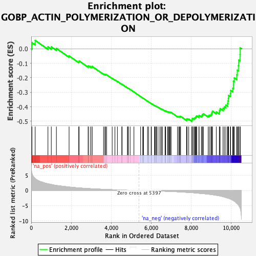
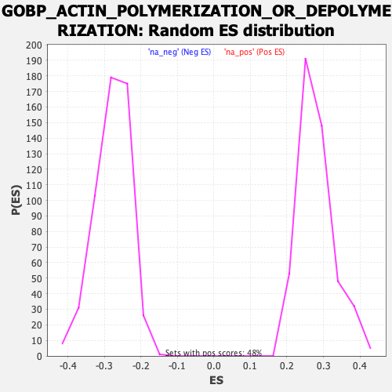

| Dataset | qlf.KOd4vsWTd4_gsea_score |
| Phenotype | NoPhenotypeAvailable |
| Upregulated in class | na_neg |
| GeneSet | GOBP_ACTIN_POLYMERIZATION_OR_DEPOLYMERIZATION |
| Enrichment Score (ES) | -0.5008863 |
| Normalized Enrichment Score (NES) | -1.7950778 |
| Nominal p-value | 0.0 |
| FDR q-value | 0.044749744 |
| FWER p-Value | 0.953 |

| SYMBOL | RANK IN GENE LIST | RANK METRIC SCORE | RUNNING ES | CORE ENRICHMENT | |
|---|---|---|---|---|---|
| 1 | SWAP70 | 37 | 5.739 | 0.0417 | No |
| 2 | CTTN | 197 | 3.950 | 0.0576 | No |
| 3 | MKKS | 836 | 2.214 | 0.0137 | No |
| 4 | HAX1 | 1003 | 1.983 | 0.0134 | No |
| 5 | MICAL3 | 1259 | 1.669 | 0.0021 | No |
| 6 | RDX | 1893 | 1.157 | -0.0496 | No |
| 7 | WIPF1 | 2376 | 0.862 | -0.0892 | No |
| 8 | CAPG | 2392 | 0.856 | -0.0839 | No |
| 9 | DBNL | 2846 | 0.653 | -0.1223 | No |
| 10 | VASP | 2858 | 0.646 | -0.1182 | No |
| 11 | PRKCD | 2954 | 0.612 | -0.1225 | No |
| 12 | COTL1 | 3035 | 0.584 | -0.1256 | No |
| 13 | ARFGEF1 | 3042 | 0.581 | -0.1216 | No |
| 14 | PLEK | 3617 | 0.394 | -0.1737 | No |
| 15 | SVIL | 3681 | 0.373 | -0.1768 | No |
| 16 | MYADM | 3720 | 0.365 | -0.1775 | No |
| 17 | CCR7 | 3768 | 0.353 | -0.1793 | No |
| 18 | PDXP | 4048 | 0.277 | -0.2039 | No |
| 19 | ABL1 | 4184 | 0.246 | -0.2150 | No |
| 20 | CDC42EP4 | 4309 | 0.215 | -0.2252 | No |
| 21 | CFL2 | 4530 | 0.161 | -0.2451 | No |
| 22 | ARHGAP35 | 4544 | 0.156 | -0.2451 | No |
| 23 | RASA1 | 4809 | 0.104 | -0.2696 | No |
| 24 | MTOR | 4841 | 0.099 | -0.2718 | No |
| 25 | LATS1 | 4853 | 0.096 | -0.2721 | No |
| 26 | PFN1 | 4945 | 0.080 | -0.2803 | No |
| 27 | PIK3CA | 5135 | 0.045 | -0.2981 | No |
| 28 | WDR1 | 5470 | -0.011 | -0.3301 | No |
| 29 | SH3BP1 | 5578 | -0.028 | -0.3402 | No |
| 30 | CAPZA2 | 5601 | -0.033 | -0.3420 | No |
| 31 | MLST8 | 5612 | -0.034 | -0.3427 | No |
| 32 | BBS4 | 5815 | -0.066 | -0.3616 | No |
| 33 | ABI2 | 5868 | -0.073 | -0.3660 | No |
| 34 | WASL | 5995 | -0.096 | -0.3774 | No |
| 35 | CAPZA1 | 6010 | -0.098 | -0.3780 | No |
| 36 | WAS | 6165 | -0.127 | -0.3918 | No |
| 37 | DLG1 | 6179 | -0.129 | -0.3920 | No |
| 38 | GBA2 | 6219 | -0.138 | -0.3946 | No |
| 39 | PPP1R9B | 6270 | -0.148 | -0.3983 | No |
| 40 | ARPC5 | 6290 | -0.153 | -0.3989 | No |
| 41 | ARPC4 | 6392 | -0.176 | -0.4072 | No |
| 42 | RAC1 | 6477 | -0.195 | -0.4138 | No |
| 43 | CYFIP1 | 6505 | -0.200 | -0.4148 | No |
| 44 | NCK1 | 6565 | -0.213 | -0.4188 | No |
| 45 | ARPC1A | 6692 | -0.248 | -0.4289 | No |
| 46 | KANK3 | 6698 | -0.249 | -0.4274 | No |
| 47 | MTPN | 6724 | -0.256 | -0.4278 | No |
| 48 | SNX9 | 6820 | -0.280 | -0.4347 | No |
| 49 | SPTB | 6857 | -0.290 | -0.4359 | No |
| 50 | CFL1 | 6889 | -0.298 | -0.4365 | No |
| 51 | CAPZB | 6924 | -0.308 | -0.4374 | No |
| 52 | BAG4 | 6962 | -0.318 | -0.4384 | No |
| 53 | CIT | 6992 | -0.328 | -0.4386 | No |
| 54 | PRKCE | 7313 | -0.422 | -0.4661 | No |
| 55 | FLII | 7376 | -0.444 | -0.4685 | No |
| 56 | SSH3 | 7412 | -0.457 | -0.4683 | No |
| 57 | FCHSD2 | 7452 | -0.469 | -0.4683 | No |
| 58 | TRIOBP | 7468 | -0.478 | -0.4660 | No |
| 59 | PFN2 | 7767 | -0.599 | -0.4899 | No |
| 60 | ARPC5L | 7773 | -0.601 | -0.4857 | No |
| 61 | ARF6 | 7790 | -0.608 | -0.4824 | No |
| 62 | CDC42EP3 | 7875 | -0.642 | -0.4854 | No |
| 63 | ARPC2 | 8037 | -0.708 | -0.4953 | Yes |
| 64 | CYFIP2 | 8042 | -0.711 | -0.4901 | Yes |
| 65 | NCK2 | 8045 | -0.712 | -0.4846 | Yes |
| 66 | RHOA | 8056 | -0.717 | -0.4799 | Yes |
| 67 | TWF1 | 8127 | -0.750 | -0.4808 | Yes |
| 68 | SSH1 | 8166 | -0.769 | -0.4783 | Yes |
| 69 | HCLS1 | 8200 | -0.788 | -0.4753 | Yes |
| 70 | TMOD3 | 8233 | -0.810 | -0.4720 | Yes |
| 71 | GRB2 | 8245 | -0.814 | -0.4666 | Yes |
| 72 | MSRB1 | 8278 | -0.831 | -0.4631 | Yes |
| 73 | TMSB4X | 8386 | -0.897 | -0.4663 | Yes |
| 74 | HIP1R | 8391 | -0.908 | -0.4596 | Yes |
| 75 | MSRB2 | 8506 | -0.973 | -0.4628 | Yes |
| 76 | ARHGAP18 | 8553 | -1.004 | -0.4593 | Yes |
| 77 | PYCARD | 8567 | -1.010 | -0.4526 | Yes |
| 78 | DSTN | 8610 | -1.033 | -0.4485 | Yes |
| 79 | BRK1 | 8848 | -1.197 | -0.4618 | Yes |
| 80 | EVL | 8910 | -1.237 | -0.4579 | Yes |
| 81 | NCKAP1L | 8982 | -1.307 | -0.4545 | Yes |
| 82 | VILL | 9016 | -1.330 | -0.4471 | Yes |
| 83 | ABI1 | 9035 | -1.340 | -0.4383 | Yes |
| 84 | ARPC3 | 9062 | -1.370 | -0.4300 | Yes |
| 85 | CORO1A | 9252 | -1.572 | -0.4357 | Yes |
| 86 | TTC17 | 9405 | -1.734 | -0.4367 | Yes |
| 87 | RICTOR | 9414 | -1.746 | -0.4237 | Yes |
| 88 | ARPC1B | 9445 | -1.790 | -0.4124 | Yes |
| 89 | ADD1 | 9590 | -2.024 | -0.4103 | Yes |
| 90 | FCHSD1 | 9656 | -2.133 | -0.3997 | Yes |
| 91 | PTK2B | 9731 | -2.282 | -0.3888 | Yes |
| 92 | SPTAN1 | 9814 | -2.456 | -0.3773 | Yes |
| 93 | BAIAP2 | 9838 | -2.491 | -0.3599 | Yes |
| 94 | TMSB10 | 9855 | -2.530 | -0.3414 | Yes |
| 95 | F2RL1 | 9866 | -2.554 | -0.3223 | Yes |
| 96 | MICAL1 | 9957 | -2.794 | -0.3089 | Yes |
| 97 | SPTBN1 | 9971 | -2.844 | -0.2877 | Yes |
| 98 | PREX1 | 10075 | -3.178 | -0.2725 | Yes |
| 99 | BIN1 | 10108 | -3.280 | -0.2497 | Yes |
| 100 | JAK2 | 10109 | -3.287 | -0.2238 | Yes |
| 101 | PSTPIP1 | 10152 | -3.463 | -0.2005 | Yes |
| 102 | TWF2 | 10276 | -4.178 | -0.1793 | Yes |
| 103 | CORO7 | 10304 | -4.351 | -0.1476 | Yes |
| 104 | GSN | 10360 | -4.752 | -0.1154 | Yes |
| 105 | PLEKHG2 | 10373 | -4.869 | -0.0781 | Yes |
| 106 | ADD3 | 10441 | -5.713 | -0.0395 | Yes |
| 107 | SSH2 | 10448 | -5.806 | 0.0058 | Yes |
